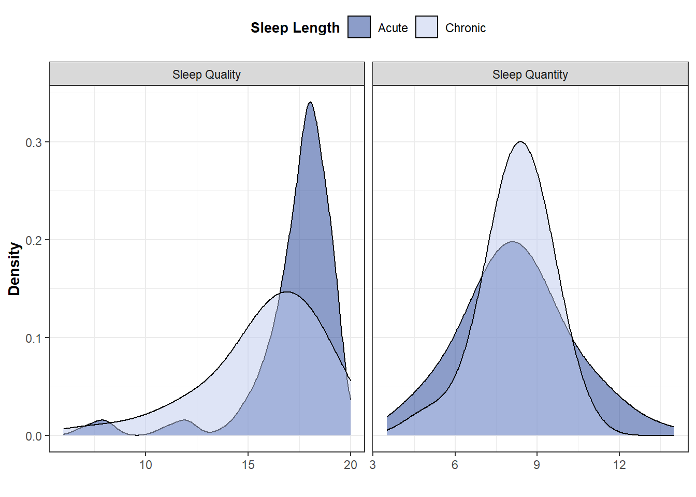

4 Study 4
Data_Study4_Wide<-Data_Meta_Raw.wide[Data_Meta_Raw.wide$Study==4,]4.1 Data analysis
Planned statistical analysis: Run SEM for each sleep variable (IV) on endorsement of moral principles (DV)
#Primary Analysis
Model_QualCroSEMS4<-
'MoralTOT=~Moral_DIL+Moral_SCA+Moral_CAR
MoralTOT~SleepQualCro'
fitQualCro<-sem(Model_QualCroSEMS4, data=Data_Study4_Wide, estimator="MLR")## Warning in lav_data_full(data = data, group = group, cluster = cluster, : lavaan
## WARNING: some observed variances are (at least) a factor 1000 times larger than
## others; use varTable(fit) to investigate## Warning in lav_model_estimate(lavmodel = lavmodel, lavpartable = lavpartable, :
## lavaan WARNING: the optimizer warns that a solution has NOT been found!## Warning in lav_model_estimate(lavmodel = lavmodel, lavpartable = lavpartable, :
## lavaan WARNING: the optimizer warns that a solution has NOT been found!## Warning in lav_model_estimate(lavmodel = lavmodel, lavpartable = lavpartable, :
## lavaan WARNING: the optimizer warns that a solution has NOT been found!## Warning in lav_model_estimate(lavmodel = lavmodel, lavpartable = lavpartable, :
## lavaan WARNING: the optimizer warns that a solution has NOT been found!#Secondary Analyses
Model_QualAcuSEMS4<-
'MoralTOT=~Moral_DIL+Moral_SCA+Moral_CAR
MoralTOT~SleepQualAcu'
fitQualAcu<-sem(Model_QualAcuSEMS4, data=Data_Study4_Wide, estimator="MLR")## Warning in lav_data_full(data = data, group = group, cluster = cluster, : lavaan
## WARNING: some observed variances are (at least) a factor 1000 times larger than
## others; use varTable(fit) to investigate## Warning in lav_object_post_check(object): lavaan WARNING: some estimated ov
## variances are negativeModel_QuantCroSEMS4<-
'MoralTOT=~Moral_DIL+Moral_SCA+Moral_CAR
MoralTOT~SleepQuantCro'
fitQuantCro<-sem(Model_QuantCroSEMS4, data=Data_Study4_Wide, estimator="MLR")## Warning in lav_data_full(data = data, group = group, cluster = cluster, : lavaan
## WARNING: some observed variances are (at least) a factor 1000 times larger than
## others; use varTable(fit) to investigate
## Warning in lav_data_full(data = data, group = group, cluster = cluster, : lavaan
## WARNING: some estimated ov variances are negativeModel_QuantAcuSEMS4<-
'MoralTOT=~Moral_DIL+Moral_SCA+Moral_CAR
MoralTOT~SleepQuantAcu'
fitQuantAcu<-sem(Model_QuantAcuSEMS4, data=Data_Study4_Wide, estimator="MLR")## Warning in lav_data_full(data = data, group = group, cluster = cluster, : lavaan
## WARNING: some observed variances are (at least) a factor 1000 times larger than
## others; use varTable(fit) to investigate
## Warning in lav_data_full(data = data, group = group, cluster = cluster, : lavaan
## WARNING: some estimated ov variances are negativesummary(fitQualCro)## lavaan 0.6-7 did NOT end normally after 533 iterations
## ** WARNING ** Estimates below are most likely unreliable
##
## Estimator ML
## Optimization method NLMINB
## Number of free parameters 7
##
## Number of observations 99
##
## Model Test User Model:
##
## Test statistic NA
## Degrees of freedom NA
##
## Parameter Estimates:
##
## Standard errors Sandwich
## Information bread Observed
## Observed information based on Hessian
##
## Latent Variables:
## Estimate Std.Err z-value P(>|z|)
## MoralTOT =~
## Moral_DIL 1.000
## Moral_SCA 0.000 NA
## Moral_CAR -0.000 NA
##
## Regressions:
## Estimate Std.Err z-value P(>|z|)
## MoralTOT ~
## SleepQualCro -1.489 NA
##
## Variances:
## Estimate Std.Err z-value P(>|z|)
## .Moral_DIL -2215512.965 NA
## .Moral_SCA 16.691 NA
## .Moral_CAR 0.034 NA
## .MoralTOT 2216170.176 NAsummary(fitQualAcu)## lavaan 0.6-7 ended normally after 380 iterations
##
## Estimator ML
## Optimization method NLMINB
## Number of free parameters 7
##
## Number of observations 99
##
## Model Test User Model:
## Standard Robust
## Test Statistic 0.061 0.056
## Degrees of freedom 2 2
## P-value (Chi-square) 0.970 0.972
## Scaling correction factor 1.093
## Yuan-Bentler correction (Mplus variant)
##
## Parameter Estimates:
##
## Standard errors Sandwich
## Information bread Observed
## Observed information based on Hessian
##
## Latent Variables:
## Estimate Std.Err z-value P(>|z|)
## MoralTOT =~
## Moral_DIL 1.000
## Moral_SCA 0.816 1.883 0.434 0.665
## Moral_CAR 0.003 0.001 2.295 0.022
##
## Regressions:
## Estimate Std.Err z-value P(>|z|)
## MoralTOT ~
## SleepQualAcu -0.074 0.326 -0.226 0.821
##
## Variances:
## Estimate Std.Err z-value P(>|z|)
## .Moral_DIL 597.017 171.683 3.477 0.001
## .Moral_SCA -29.487 104.379 -0.282 0.778
## .Moral_CAR 0.034 0.005 7.127 0.000
## .MoralTOT 69.272 165.286 0.419 0.675summary(fitQuantCro)## lavaan 0.6-7 ended normally after 228 iterations
##
## Estimator ML
## Optimization method NLMINB
## Number of free parameters 7
##
## Number of observations 99
##
## Model Test User Model:
## Standard Robust
## Test Statistic 0.027 0.021
## Degrees of freedom 2 2
## P-value (Chi-square) 0.987 0.990
## Scaling correction factor 1.281
## Yuan-Bentler correction (Mplus variant)
##
## Parameter Estimates:
##
## Standard errors Sandwich
## Information bread Observed
## Observed information based on Hessian
##
## Latent Variables:
## Estimate Std.Err z-value P(>|z|)
## MoralTOT =~
## Moral_DIL 1.000
## Moral_SCA 1.038 2.797 0.371 0.711
## Moral_CAR 0.003 0.001 2.309 0.021
##
## Regressions:
## Estimate Std.Err z-value P(>|z|)
## MoralTOT ~
## SleepQuantCro -0.396 1.155 -0.343 0.732
##
## Variances:
## Estimate Std.Err z-value P(>|z|)
## .Moral_DIL 611.846 158.983 3.849 0.000
## .Moral_SCA -42.021 154.502 -0.272 0.786
## .Moral_CAR 0.034 0.005 7.340 0.000
## .MoralTOT 54.283 150.715 0.360 0.719summary(fitQualCro)## lavaan 0.6-7 did NOT end normally after 533 iterations
## ** WARNING ** Estimates below are most likely unreliable
##
## Estimator ML
## Optimization method NLMINB
## Number of free parameters 7
##
## Number of observations 99
##
## Model Test User Model:
##
## Test statistic NA
## Degrees of freedom NA
##
## Parameter Estimates:
##
## Standard errors Sandwich
## Information bread Observed
## Observed information based on Hessian
##
## Latent Variables:
## Estimate Std.Err z-value P(>|z|)
## MoralTOT =~
## Moral_DIL 1.000
## Moral_SCA 0.000 NA
## Moral_CAR -0.000 NA
##
## Regressions:
## Estimate Std.Err z-value P(>|z|)
## MoralTOT ~
## SleepQualCro -1.489 NA
##
## Variances:
## Estimate Std.Err z-value P(>|z|)
## .Moral_DIL -2215512.965 NA
## .Moral_SCA 16.691 NA
## .Moral_CAR 0.034 NA
## .MoralTOT 2216170.176 NAAlternative statistical analysis: using a composite variable as the dependent variable instead of a latent variable
# creation of the composite variable
Data_Study4_Wide$MoralZ_DIL<- scale(Data_Study4_Wide$Moral_DIL,
center = TRUE, scale = TRUE)
Data_Study4_Wide$MoralZ_SCA<- scale(Data_Study4_Wide$Moral_SCA,
center = TRUE, scale = TRUE)
Data_Study4_Wide$MoralZ_CAR<- scale(Data_Study4_Wide$Moral_CAR,
center = TRUE, scale = TRUE)
Data_Study4_Wide$MoralZ<-with(Data_Study4_Wide, MoralZ_DIL+MoralZ_SCA+MoralZ_CAR)
# univariate regression
QualCroLMS4<-lm(MoralZ~SleepQualCro, Data_Study4_Wide)
QualAcuLMS4<-lm(MoralZ~SleepQualAcu, Data_Study4_Wide)
QuantCroLMS4<-lm(MoralZ~SleepQuantCro,Data_Study4_Wide)
QuantAcuLMS4<-lm(MoralZ~SleepQuantAcu, Data_Study4_Wide)Extract coefficients (unstandardized slopes, standard errors and p-values) from linear regression models
#Chronic Sleep Quality
bQualCroS4<-round(summary(QualCroLMS4)$coefficients[2,1], digit=2)
SEQualCroS4<- round(summary(QualCroLMS4)$coefficients[2,2] , digit=2)
pQualCroS4<- round(summary(QualCroLMS4)$coefficients[2,4], digit=2)
#Acute Sleep Quality
bQualAcuS4<- round(summary(QualAcuLMS4)$coefficients[2,1] , digit=2)
SEQualAcuS4 <- round(summary(QualAcuLMS4)$coefficients[2,2] , digit=2)
pQualAcuS4<- round(ifelse(summary(QualAcuLMS4)$coefficients[2,4]*3<.99, summary(QualAcuLMS4)$coefficients[2,4]*3, .99), digit=2)
#Chronic Sleep Quantity
bQuantCroS4<- round(summary(QuantCroLMS4)$coefficients[2,1] , digit=2)
SEQuantCroS4 <- round(summary(QuantCroLMS4)$coefficients[2,2] , digit=2)
pQuantCroS4<- round(ifelse(summary(QuantCroLMS4)$coefficients[2,4]*4<.99, summary(QuantCroLMS4)$coefficients[2,4]*3, .99), digit=2)
#Acute Sleep Quantity
bQuantAcuS4<- round(summary(QuantAcuLMS4)$coefficients[2,1] , digit=2)
SEQuantAcuS4 <- round(summary(QuantAcuLMS4)$coefficients[2,2] , digit=2)
pQuantAcuS4<- round(ifelse(summary(QuantAcuLMS4)$coefficients[2,4]*3<.99, summary(QuantAcuLMS4)$coefficients[2,4]*3, .99), digit=2)Create datasets to display regression summary on the plots
ResumQualCroS4<- paste0("b=",bQualCroS4,", ", "SE=",SEQualCroS4,", ","p=",pQualCroS4)
ResumQualAcuS4<- paste0("b=",bQualAcuS4,", ", "SE=",SEQualAcuS4,", ","p=",pQualAcuS4)
ResumQuantCroS4<- paste0("b=",bQuantCroS4,", ", "SE=",SEQuantCroS4,", ","p=",pQuantCroS4)
ResumQuantAcuS4<- paste0("b=",bQuantAcuS4,", ", "SE=",SEQuantAcuS4,", ","p=",pQuantAcuS4)
annotationQualCroS4 <- data.frame(x = 9, y = 5.5, label = ResumQualCroS4)
annotationQualAcuS4 <- data.frame(x = 6, y = 5.5, label = ResumQualAcuS4)
annotationQuantCroS4 <- data.frame(x =6, y = 5.5, label = ResumQuantCroS4)
annotationQuantAcuS4 <- data.frame(x = 6, y = 5.5, label = ResumQuantAcuS4)
annotationS4<-cbind(
rbind(annotationQualCroS4,
annotationQualAcuS4,
annotationQuantCroS4,
annotationQuantAcuS4),
SleepType=c(
"Quality of Chronic Sleep",
"Quality of Acute Sleep",
"Quantity of Chronic Sleep",
"Quantity of Acute Sleep"))Prepare data for plots
Data_PlotS4<- Data_Study4_Wide %>%
pivot_longer(
cols=c(SleepQualCro, SleepQualAcu, SleepQuantCro, SleepQuantAcu),
names_to="SleepType") %>%
rename("SleepValue"=value) %>%
mutate(
SleepLength=case_when(
SleepType=="SleepQualCro" | SleepType=="SleepQuantCro"~"Chronic",
SleepType=="SleepQualAcu" | SleepType=="SleepQuantAcu"~"Acute"),
SleepQuanthist=case_when(
SleepType=="SleepQualCro" | SleepType=="SleepQualAcu"~"Sleep Quality",
SleepType=="SleepQuantCro" | SleepType=="SleepQuantAcu"~"Sleep Quantity"))
Data_PlotS4$SleepType<-dplyr::recode(Data_PlotS4$SleepType,
"SleepQualCro" = "Quality of Chronic Sleep",
"SleepQualAcu" = "Quality of Acute Sleep",
"SleepQuantCro" = "Quantity of Chronic Sleep",
"SleepQuantAcu" = "Quantity of Acute Sleep")
Data_MoralS4<- Data_Study4_Wide %>%
pivot_longer(
cols=c(Moral_DIL, Moral_SCA, Moral_CAR),
names_to="Outcome_moral") %>%
rename("MoralValue"=value)
Data_MoralS4$Outcome_moral<-dplyr::recode(Data_MoralS4$Outcome_moral,
"Moral_DIL" = "Dilemmas",
"Moral_SCA" = "Scale",
"Moral_CAR" = "Autonomous cars")N in each sleep quantity category
Dist.Quantity.ChronicS4<-Data_Study4_Wide %>%
dplyr::group_by(SleepQuantCro) %>%
summarise(
N=n()) %>%
spread(SleepQuantCro, N) %>%
as.data.frame()## `summarise()` ungrouping output (override with `.groups` argument)row.names(Dist.Quantity.ChronicS4)<-"Quantity Chronic"
Dist.Quantity.AcuteS4<-Data_Study4_Wide %>%
dplyr::group_by(SleepQuantAcu) %>%
summarise(
N=n()) %>%
spread(SleepQuantAcu, N) %>%
as.data.frame()## `summarise()` ungrouping output (override with `.groups` argument)row.names(Dist.Quantity.AcuteS4)<-"Quantity Acute"
bind_rows(Dist.Quantity.AcuteS4, Dist.Quantity.ChronicS4)## 2 3 4 5 6 7 8 9 10
## Quantity Acute 1 1 3 6 17 31 34 5 1
## Quantity Chronic 1 NA 1 3 16 33 42 2 14.2 Summary of Study 4 results
Put results in a table
SleepMarker<-c("Quality Chronic","Quality Acute","Quantity Chronic","Quantity Acute")
bS4<-c(bQualCroS4,bQualAcuS4,bQuantCroS4,bQuantAcuS4)
SES4<-c(SEQualCroS4,SEQualAcuS4,SEQuantCroS4,SEQuantAcuS4)
pvalS4<-c(pQualCroS4,pQualAcuS4,pQuantCroS4,pQuantAcuS4)
NS4<-c(length(QualCroLMS4$fitted.values),
length(QualAcuLMS4$fitted.values),
length(QuantCroLMS4$fitted.values),
length(QuantAcuLMS4$fitted.values))
ResultsStudy4<-data.frame("Sleep Indicator"=SleepMarker, "Unstandardized Slope"=bS4, "Standard Errors"=SES4, "p values"=pvalS4, "N"=NS4)
gt(ResultsStudy4)| Sleep.Indicator | Unstandardized.Slope | Standard.Errors | p.values | N |
|---|---|---|---|---|
| Quality Chronic | -0.02 | 0.06 | 0.73 | 99 |
| Quality Acute | -0.03 | 0.10 | 0.99 | 99 |
| Quantity Chronic | -0.10 | 0.20 | 0.99 | 99 |
| Quantity Acute | 0.00 | 0.16 | 0.99 | 99 |
4.3 Plots of Study 4 results
Plot distribution for each sleep indicator
DistQualityS4<-ggplot(Data_PlotS4, aes(x=SleepValue, fill=factor(SleepLength))) +
geom_density(alpha=0.5, size=0.5,adjust = 2) +
scale_fill_manual(values=c("#193B94", "#BDCAEE", "#193B94", "#BDCAEE")) +
theme_bw() +
ylab("Density") + xlab("") +
facet_wrap(~factor(SleepQuanthist), scale="free_x") +
guides(fill=guide_legend("Sleep Length")) +
theme(
axis.title.y = element_text(size = 11, hjust = 0.5, face="bold"),
axis.title.x = element_text(face="bold", size = 11, hjust = 0.5),
legend.position="top",
legend.title = element_text(colour="black", size=10, face="bold"))
DistQualityS4
Plot distribution for the scores to the sacrificial dilemmas, moral scale and autonomous car dilemmas
DistMoralS4<-ggplot(Data_MoralS4, aes(x=MoralValue, fill=factor(Outcome_moral))) +
geom_density(alpha=0.5, size=0.5,adjust = 2) +
theme_bw() +
ylab("Density") + xlab("Moral Scale") +
facet_wrap(~factor(Outcome_moral), scale="free") +
guides(fill="none") +
theme(
axis.title.y = element_text(size = 11, hjust = 0.5, face="bold"),
axis.title.x = element_text(face="bold", size = 11, hjust = 0.5))
DistMoralS4
Scatterplots
ggplot(Data_PlotS4, aes(x=SleepValue, y=MoralZ)) +
geom_jitter(alpha=0.6, color="#545454", size=1.2) +
geom_smooth(method="lm")+
facet_wrap(~factor(SleepType), scales="free_x") +
theme_bw() + ylab("Utilitirianism") + xlab("") +
theme(axis.title.y = element_text(size = 11, hjust = 0.5, face="bold"),
axis.title.x = element_text(face="bold", size = 11, hjust = 0.5)) +
guides(size=FALSE, colour=FALSE, fill=FALSE) +
geom_label(data=annotationS4, aes( x=x, y=y, label=label),
color="black", size=3.5 , angle=45, alpha=7/10, inherit.aes = FALSE)## `geom_smooth()` using formula 'y ~ x'